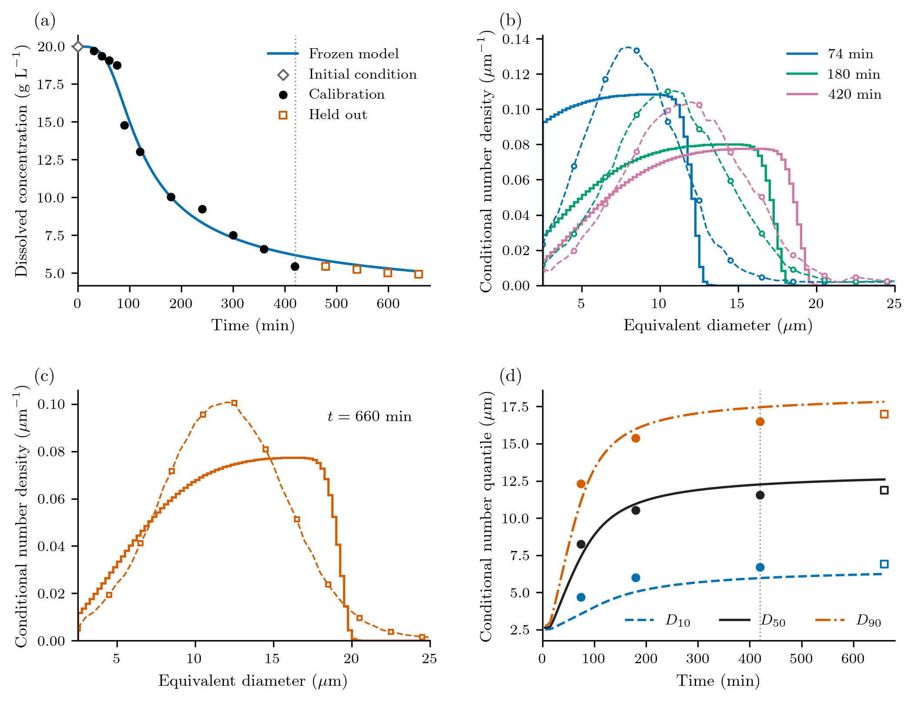

Calibrating an isothermal protein batch
How much can concentration and microscopy tell us about crystal formation? Concentration measures material transferred out of solution. A number-weighted size distribution describes how that material is divided among particles. Here we use both to calibrate an initially unseeded lysozyme batch, then predict later measurements without refitting.
The experiment is the original 100 mL, 20 °C isothermal batch in Tang et al. (2018), Figures 11(d) and 12(a), at pH 4.5 in 0.1 M sodium acetate buffer. The supplied graph readings retain their source coordinates and units. This calculation uses neither Mitchell's replot nor its fitted kinetic parameters.
A population coupled to dissolved protein
Let $L$ be equivalent diameter in μm, $t$ time in min, and $n(L,t)$ number density in particles m⁻³ μm⁻¹. With size-independent growth,
\[\frac{\partial n(L,t)}{\partial t} +\frac{\partial [G(t)n(L,t)]}{\partial L}=0, \qquad G(t)n(0,t)=J(t),\qquad n(L,0)=0.\]
There are no intentional seeds, aggregation or breakage. For constant solution volume, the continuum dissolved concentration $c$ in g/L (= kg/m³) satisfies
\[\frac{dc(t)}{dt} =-3\times10^{-18}\rho k_v G(t)\int_0^\infty L^2n(L,t)\,dL, \qquad c(0)\approx19.97\ \mathrm{g\,L}^{-1}.\]
The initial reading fixes the initial condition; it is not a fitted residual. The code retains its unrounded supplied value. Define the normalized driving force and reference-rate laws by
\[r(t)=\frac{c(t)-c_*}{c(0)-c_*},\qquad J(t)=J_{\mathrm{ref}}r(t)^j,\qquad G(t)=G_{\mathrm{ref}}r(t)^g\quad(c(t)>c_*).\]
Both rates are zero at or below $c_*$, including when an exponent is zero. The reference rates have units particles m⁻³ min⁻¹ and μm min⁻¹, respectively. They describe the rate at the initial driving force, rather than a coefficient whose magnitude changes with the chosen supersaturation convention.
| Quantity | Treatment |
|---|---|
| $\log J_{\mathrm{ref}}$, $\log G_{\mathrm{ref}}$ | Fitted natural logarithms of rates in the units above |
| $j$, $g$ | Fitted nonnegative exponents |
| $c_*$ | Nominal assumption 2.16 g/L, reported by Mitchell; not measured equilibrium here; separate sensitivity runs |
| $\rho$, $k_v$ | Fixed 1240 kg/m³ and 0.81 |
| Size mapping | Microscopy equivalent diameter is the model length; fixed shape factor |
| Clock and initial population | Original times, initial marker at model time zero, empty population |
The source's salt basis and stirring-speed descriptions conflict. We retain those uncertainties; fitting this conditional model does not resolve them. Tang's printed solubility relation at 20 °C also conflicts with the late concentration readings. We do not impose that relation or interpret the last measurement as equilibrium.
Assemble and solve with package components
The runnable example defines the rate callbacks and this model assembly:
model = PBMModel(
growth=Growth(rate=growth),
primary=Nucleation(rate=nucleation, size=0.))
operator = compile(model, grid;
bc=SizeBC(NoFlux(), OpenBoundary()),
methods=TermMethods(growth=MUSCL(),
by_term=(primary=BoundaryInjection(:left),)))
system = PBMSystem((crystals=operator,);
nonnegative_bulk=(:c,),
accounting=(CumulativeAccounting(:crystals; properties=(material=3,)),),
exchanges=(ConservativeExchange(:crystals, :c,
(L,p,t,ctx)->1e-6*p.rho*p.kv*L^3),))
problem = PBMProblem(system, (crystals=zeros(length(grid)),), (0.,660.);
bulk0=(c=p.c0,), p=p)
solution = simulate(problem; dt=0.0875, saveat=[0.,74.,180.,420.,660.])Here grid spans 0–50 μm with 100 bins. growth returns μm/min; nucleation divides the physical birth rate by $10^{12}$. The sectional state contains bin-integrated particle concentrations divided by $10^{12}$. Therefore $10^{-6}=10^{12}(10^{-6})^3$ converts its third moment to material volume per solution volume. ConservativeExchange computes solute depletion from the same numerical population increment. Adding a second depletion ODE would count the transfer twice. The invariant uses the package's pivot-weighted discrete sum $\sum_i L_i^3 N_i$; the number observer uses a piecewise-constant subcell density. These are different numerical approximations to the continuum measure, checked by spatial refinement and the closed-moment reference.
Boundary injection deposits into the first finite bin, which carries a small discrete material amount. It is paid for by the same exchange, not ignored. The upper-boundary ledger records any material leaving the resolved domain; it is not dissolved protein. The reported invariant includes that ledger.
A complete short forward run needs only the package environment:
julia --project=. examples/isothermal_protein_crystallization.jlThis uses an illustrative parameter set and reports conditional number quantiles. It is a smoke calculation, not the calibrated result below.
Concentration and full number distributions
The active CSVs are in examples/data/protein_crystallization/tang2018_isothermal/. Eleven concentrations and the distributions at 74, 180 and 420 min calibrate. Four later concentrations and the 660-min distribution are held out. Other than resetting the initial marker to model time zero, graph-read concentration times remain unrounded.
The microscopy curves are number distributions. They are not volume medians. We condition each observed and predicted distribution on 2.5–25 μm:
\[F(L,t)=\frac{\int_{2.5}^{L}n(\ell,t)\,d\ell} {\int_{2.5}^{25}n(\ell,t)\,d\ell},\qquad 2.5\le L\le25.\]
The observer integrates partial grid cells exactly for the piecewise-constant sectional density. An empty predicted window is invalid; it receives neither a seed nor an invented median. For example:
number_quantiles = PopulationQuantiles(:crystals, [.1,.5,.9]; window=(2.5,25.))
F = conditional_cdf(grid, N, [5.,10.,15.]; window=(2.5,25.))One distribution block compares its entire quantile function $Q=F^{-1}$:
\[W_2^2(t)=\int_0^1[Q_{\mathrm{model}}(u,t)-Q_{\mathrm{data}}(u,t)]^2\,du.\]
Its units are μm². The 0.5 μm tabulation reconstructs a published curve; its points are not independent counted particles. A block is constructed as WassersteinObservation(t, sizes, cdf, :crystals; window=(2.5,25.), points=256, scale=.5, weight=1/3). The midpoint quantile quadrature is checked at 512 and 1024 points. Reported distribution distances use 1024 points; the fitted loss uses
- Diagnostic D10/D50/D90 values are not fitted again.
Calibration followed by held-out prediction
The deterministic calibration loss is
\[\mathcal L=\frac1{11}\sum_{i\in\mathrm{cal}} \left(\frac{c(t_i)-c_i}{0.1\ \mathrm{g\,L}^{-1}}\right)^2 +\frac{\lambda}{3}\sum_{t\in\{74,180,420\}} \frac{W_2^2(t)}{(0.5\ \mu\mathrm m)^2},\qquad\lambda=1.\]
The two scales set the comparison, not measured sensor standard deviations. This is not a likelihood or posterior; there are no informative literature priors, confidence intervals or mandatory MCMC runs. CalibrationProblem collects ResidualObservation blocks, and the optional Optim extension fits them with forward-mode derivatives:
include("examples/isothermal_protein_crystallization.jl")
using .IsothermalProteinCrystallization, PopulationBalanceModels, Optim
cal = calibration()
u0 = coordinates([log(1e11), log(.2), 2., 2.])
result = fit(cal, u0) # one local fit
pfit = cal.parameters(result.minimizer, first(cal.experiments))
contributions = loss_contributions(cal, result.minimizer)The full driver uses eight reproducible starts and transparent numerical search bounds: $10^6<J_{\mathrm{ref}}<10^{16}$, $10^{-4}<G_{\mathrm{ref}}<2$, $0<j<10$, $0<g<6$. Smooth box coordinates impose these search limits without a prior or Jacobian. Each trial uses a fixed native timestep from a power-of-two upper bound on its reference growth rate, capped at 0.5 min. Growth cannot exceed that bound for the declared nonnegative exponents and decreasing concentration, so the Courant number stays below 0.35 throughout the search. The schedule is locally constant for AD; bucket boundaries are numerical schedule changes, with no event derivative claimed. Independent finite differences and timestep halving check the resulting sensitivities and predictions. Failed forward solves remain invalid trials.
If the baseline leaves a systematic calibration mismatch, the driver tests only the predeclared extension $J=J_{\mathrm{ref}}r^j/[1+\exp(-(t-t_{\mathrm{on}})/(10\,\mathrm{min}))]$. It adds one onset parameter in 0–150 min and fixes the transition width at 10 min. Its reference rate is the ungated amplitude. Selection requires at least a 20% calibration-loss reduction without worsening either group by more than 10%; this is a practical complexity rule, not a significance test. Numerical checks and model selection precede the frozen held-out prediction.

Panel (a) compares dissolved concentration; the diamond fixes the initial condition, filled circles calibrate and open squares validate. The dotted line marks 420 min. Panels (b) and (c) compare conditional number densities: solid stair curves are the computed sectional densities, dashed curves and markers the supplied reconstructed observations. Panel (b) calibrates; the entire 660-min curve in (c) is held out. Panel (d) shows number quantiles derived from the same conditional distributions, not additional fitted data. Quantiles are undefined when the resolved observation window is empty; those entries remain blank. Before the first 74-min measurement, a small numerically transported tail can control the conditional quantiles. These early curves are unconstrained predictions, not measured nucleation-onset information.
The nominal fit retains the four-parameter baseline: the onset candidate lowers calibration loss from 50.58 to 47.36 (6.4%), below the 20% selection threshold. The fitted reference rates are approximately $8.12\times10^{10}$ particles m⁻³ min⁻¹ and 0.177 μm/min, with $j=5.87$ and $g=2.89$; the output CSV retains unrounded values. All four selected parameters lie inside the search bounds.
Calibration concentration RMSE is 0.670 g/L, and the 74/180/420-min distribution $W_2$ distances are 1.600/0.918/0.953 μm. In particular, the smooth model misses the sharp observed concentration fall between about 76 and 90 min. The frozen prediction gives held-out concentration RMSE 0.293 g/L and 660-min $W_2=0.891$ μm. At that time the number median is 0.729 μm too large; D10 is 0.656 μm too small and D90 is 0.832 μm too large. Thus the later shape is broader than the observed conditional shape, even though the concentration trend is followed. This is an assessed prediction, not a declaration of model adequacy.
The shape mismatch has a useful model interpretation. In the continuum model, crystals born at time $\tau$ reach $L=\int_\tau^t G(s)\,ds$ and have density $n(L,t)=J(\tau)/G(\tau)$. The power-law birth-to-growth ratio is proportional to $r(\tau)^{j-g}$. Because concentration decreases, this ratio changes monotonically with birth time. The continuum prediction therefore rises toward a sharp front; the observed curves have smooth interior peaks. The onset candidate can alter that ratio, but its calibration gain does not meet the predeclared selection rule. We retain that evidence rather than adding more mechanisms.
The generated result tables distinguish concentration error, distribution transport distance and numerical error. Conditional shape observations do not measure total particle number. Rate amplitudes and exponents can compensate as the driving force falls. The supporting conditional loss profiles refit the remaining parameters; neither profile spread nor the dispersion of multistart fits is a confidence interval. In the conditional profiles, changing $j$ by one changes loss by only about 0.12–0.20 after refitting the other rates. Some low-$g$ profiles reach the numerical upper bound on $j$ and are explicitly flagged; those bounded profiles cannot establish confidence limits. The alternative size window moves the fitted exponent $j$ to about 1.85 while leaving concentration RMSE near 0.67 g/L. This sensitivity to which part of the distribution is trusted is more informative than reporting extra digits in the nominal kinetic parameters.
Reproduce and interpret the calculation
julia --project=paper paper/setup.jl
julia --project=paper paper/case_studies/04_protein_crystallization/run.jl --smoke
julia --project=paper paper/case_studies/04_protein_crystallization/run.jl
python paper/plot_all.py --case 4The production driver retains the baseline, candidate and selection, frozen parameters, observation-level predictions, group losses, validation metrics, conservation and refinement reports, and predeclared sensitivity fits. It checks 200-to-400-bin and timestep refinement. The initial 100-bin fit was refitted at 200 bins. Refinement uses maximum concentration change and RMS quantile change (the metric in the distribution loss), with a quarter-scale threshold. The separate maximum quantile change is also retained: tails remain more sensitive than the integrated discrepancy. At 200 bins, doubling resolution changes concentration by at most 0.0103 g/L and quantiles by at most 0.0357 μm in RMS across probability; the maximum tail change is 0.309 μm. Timestep halving changes concentration by less than $5\times10^{-6}$ g/L. The material invariant holds to $2.5\times10^{-12}$ g/L, with nonnegative populations and negligible upper-boundary loss. An independent exactly closed moment calculation checks the population–solute equations without claiming a reconstructed PSD.
Fixed-solubility runs at 1, 3.5 and 4.5 g/L, distribution weights 0.25 and 4, concentration scale 0.3 g/L, and the alternative 2.5–47.5 μm window probe conditional assumptions. None is selected by held-out agreement.
The full driver and its reporting file preserve the reproduction workflow. Outputs and the standalone caption live under paper/results/04_protein_crystallization/ and paper/captions.tex; plots can be regenerated without rerunning optimization. The manifest rejects altered numerical exports. Reproduction requires Optim and JSON3 in the paper environment; the minimal forward example does not.
These results assess a conditional model of one experiment. Digitization, unreported particle counts and detection response, uncertain solubility, shape and source metadata limit kinetic interpretation. A failed held-out prediction remains evidence against this model under its stated assumptions. The older Mitchell-based Bayesian example, its inputs and audit outputs remain available in examples/protein_crystallization.jl; they are historical and are not inputs or uncertainty estimates for this calculation.